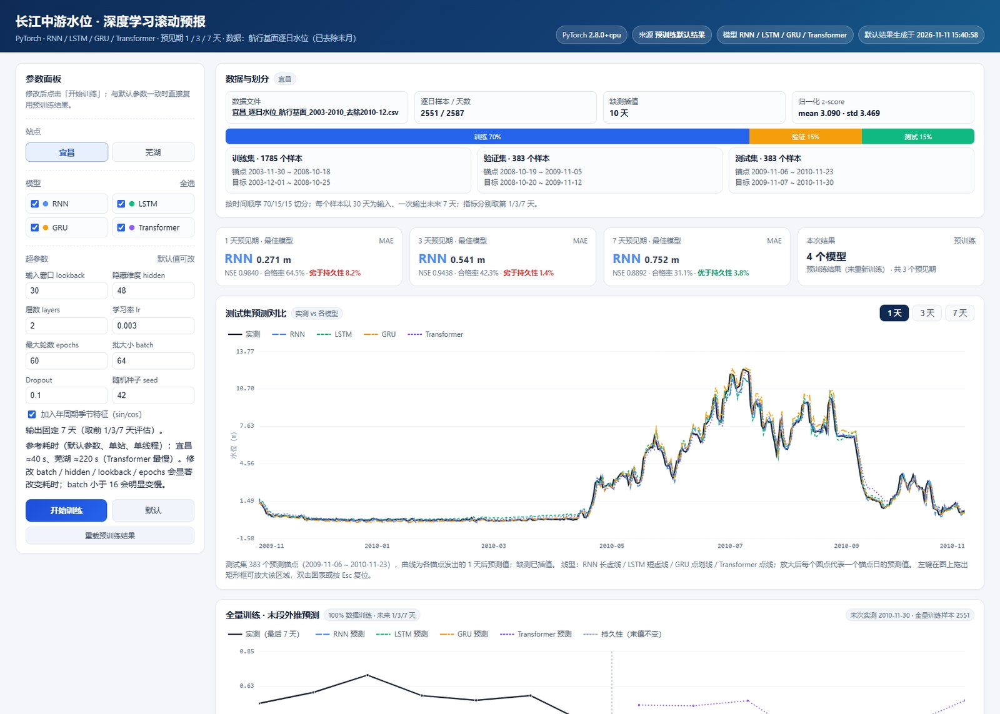
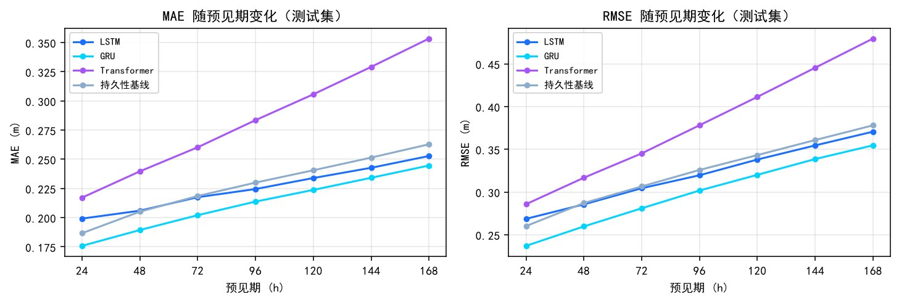
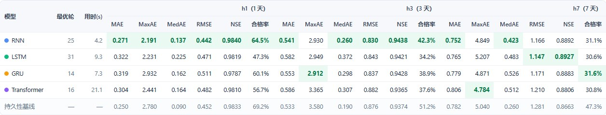
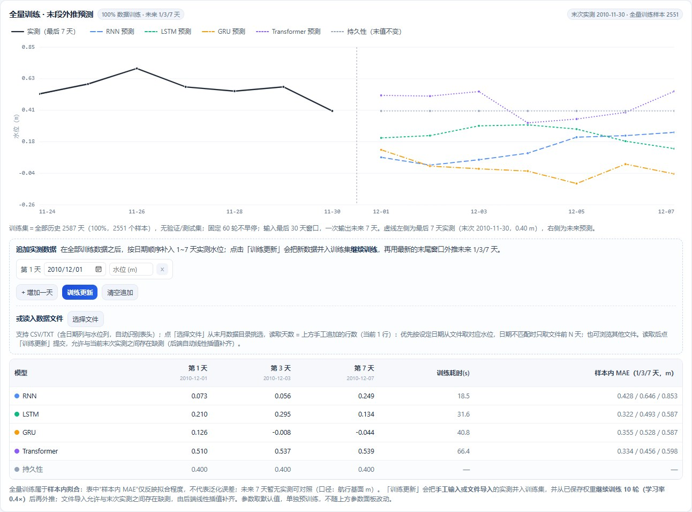
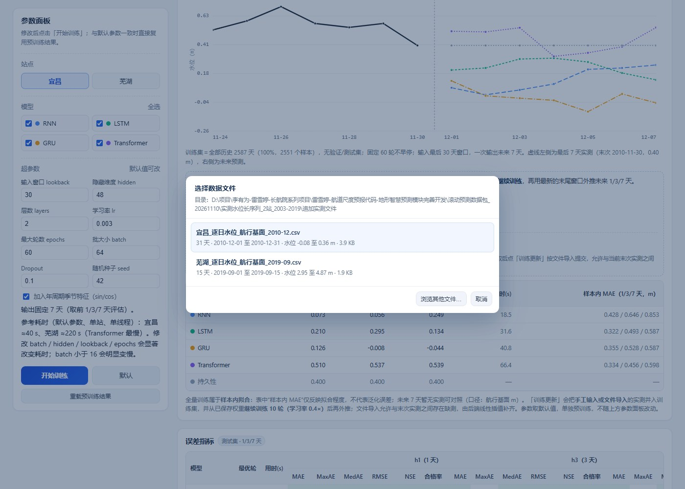
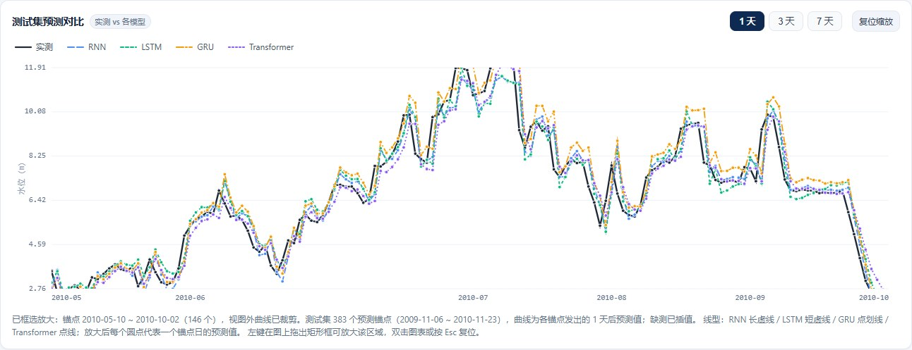

长江中游水位深度学习滚动预报平台 本地网页版
宜昌 / 芜湖两站长序列 —— 四模型 1 / 3 / 7 天滚动预报，可调参重训、全量外推与实测追加。
本平台基于 2003–2019 年长江中游宜昌、芜湖两站逐日平均水位（航行基面，m）构建： 以 30 天历史窗口为输入，用 RNN / LSTM / GRU / Transformer 四类循环神经网络 一次前向输出未来 7 天水位，并分别给出 1 / 3 / 7 天预见期的训练、评估与误差对照。 页面提供参数面板（9 项超参 + 模型勾选）交互重训、测试集预测对比（点划线区分模型、可拖框放大）、 绝对误差指标、全量训练末段外推，以及“追加实测 → 继续训练 → 再外推”的滚动更新闭环； 亦可从末月数据目录弹窗读入实测文件，读取天数由手工追加行数决定。 前端为单页原生 Canvas，后端为 Flask + PyTorch 本机服务，数据与训练均不出本机。

软件主界面：左侧为参数面板（站点、模型、超参、训练与重载），右侧自上而下为数据总览与 70/15/15 切分、 测试集预测对比（实测与四模型）、绝对误差指标表、误差柱状对比与训练损失曲线。
主要功能
2003–2019 年 · 宜昌 2,608 天 / 芜湖 5,767 有效日 · 30 天窗口 → 1/3/7 天 · 默认 60 轮 · 宜昌 1 天 RNN MAE 0.271 m、NSE 0.984；芜湖 1 天 MAE 0.080 m · 全量更新单站约 1–2 分钟（CPU）
预测与误差示例

宜昌站测试集误差随预见期变化：四模型与持久性基线对比（MAE / RMSE，24–168 h）。

绝对误差指标表：每行一个模型，每列一个预见期（1 / 3 / 7 天），含最大误差与中位误差。

全量训练 · 末段外推：100% 数据训练后，最后 7 天实测 + 未来 7 天预测及第 1 / 3 / 7 天数值表。

读入数据文件：弹窗直接定位末月数据目录并列出文件摘要，点选即读入；读取天数等于手工追加的行数。

拖框放大后的预测对比图：相邻点仅隔 1 天，放大后每个圆点代表一个锚点日的预测值。
获取与运行
- 软件以本机网页服务形式运行（Flask + PyTorch，页面与训练均在本机完成）；本页面为软件介绍。
- 在本机双击启动脚本，或在 dl 目录执行 python app.py 启动服务（默认仅监听回环地址）。
- 浏览器打开本机服务地址即可使用；数据与模型文件均在本机，不联网、不出本机。
数据口径与结果说明
实测水位取自长江航道局网站公开的逐日水位资料（2003 年 11 月起，航行基面，m）， 2010–2019 年段取后续更新资料；两站在 2010 年重叠时段逐日水位完全一致。 页面统一使用“航行基面 m”，未与 85 基准或吴淞基准混用换算。
| 测试集（默认参数） | 1 天 MAE / NSE | 3 天 MAE / NSE | 7 天 MAE / NSE |
|---|---|---|---|
| 宜昌 · 最优模型（RNN） | 0.271 m / 0.984 | 0.541 m / 0.944 | 0.752 m / 0.889 |
| 芜湖 · 最优模型（GRU / Transformer） | 0.080 m / 0.996 | — | — |
误差随预见期增大；模型与持久性基线在不同站点、不同预见期互有胜负。表中为默认参数一次训练结果， 页面可随时改参重训并以最新结果为准。
技术栈：PyTorch 2.8.0（CPU）+ Flask + 原生 Canvas / JavaScript；四模型单站训练约 1–2 分钟（CPU）。